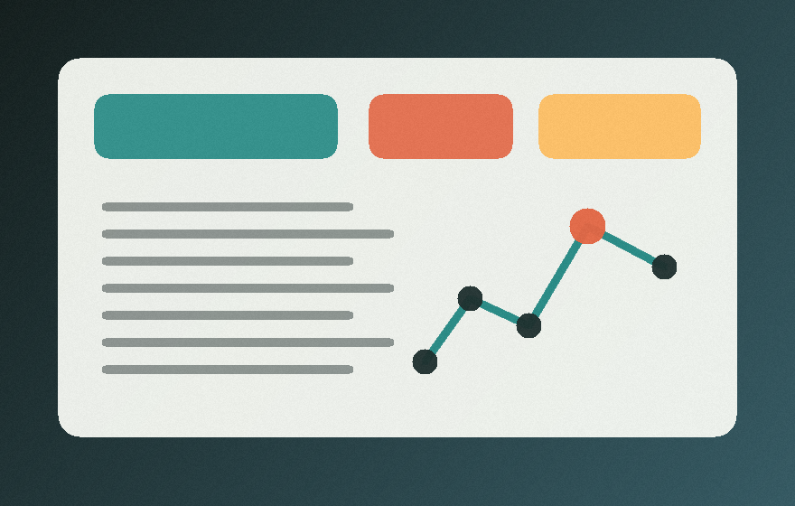
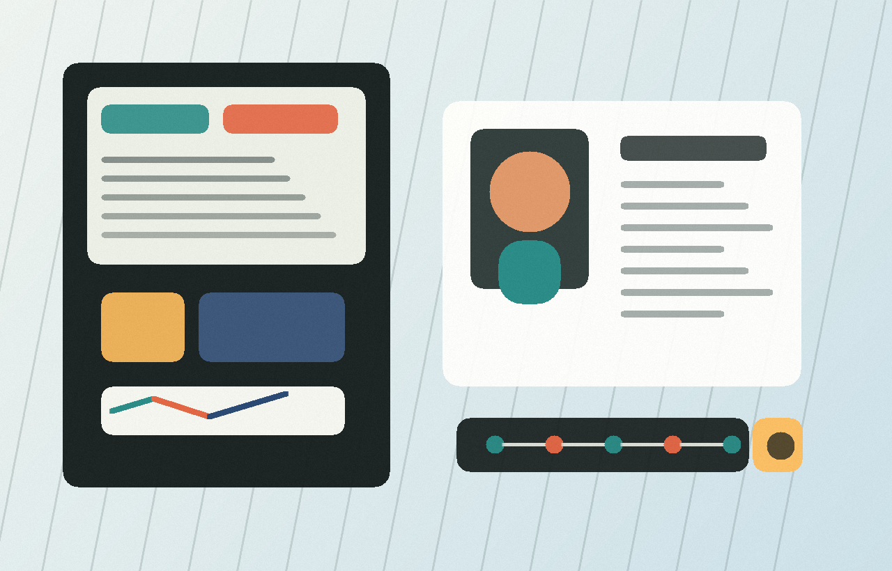
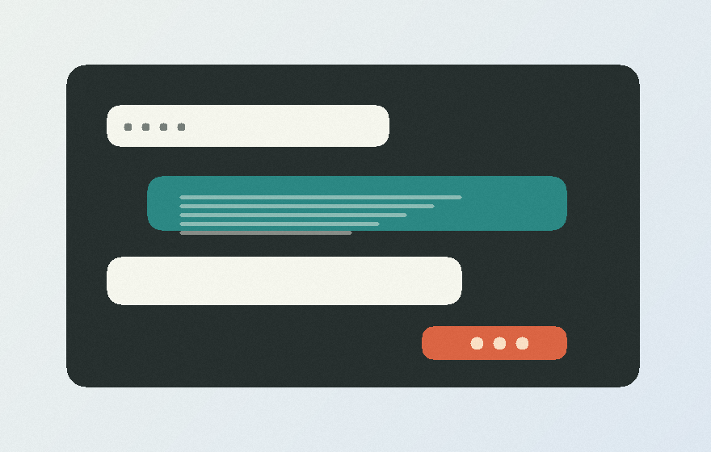
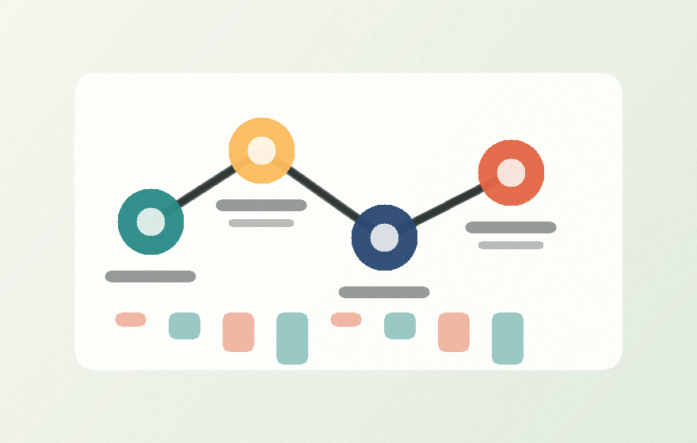

Decision Notebook
A research workspace that turns interviews, notes, and market signals into traceable product decisions.
Product builder / AI systems / thoughtful interfaces
I work across product, software, and strategy, with a bias toward tools that turn messy workflows into clear decisions. This portfolio collects the projects, industry chapters, and questions I am actively exploring.

Selected work
A focused set of case studies across product judgment, applied AI, and systems that make complex work easier to navigate.

A research workspace that turns interviews, notes, and market signals into traceable product decisions.

A lightweight assistant pattern for recurring tasks: intake, triage, follow-up, and summaries with human review points.

A planning view for teams that need to connect customer feedback, roadmap bets, risk signals, and delivery milestones.
Industry arc
Shape this into your real career story: roles, domains, launches, teams, and the moments that changed how you think.
Built depth in product thinking, software fundamentals, and business context.
Worked closer to real workflows, stakeholder needs, and execution constraints.
Shifted from isolated projects toward reusable tools, processes, and feedback loops.
Explored how AI can reduce busywork while keeping judgment and accountability visible.
Focusing on applied AI, product systems, and tools that help people move with clarity.
What I am drawn to
The throughline: turning fuzzy, important work into interfaces and systems people can actually use.
Interfaces where models, memory, and human review feel like one coherent workflow.
Choosing what matters, making tradeoffs explicit, and learning quickly from the market.
Turning signals into views that make decisions easier without flattening nuance.
Reusable rituals, templates, and tools that help teams build with less drag.
Open to conversations